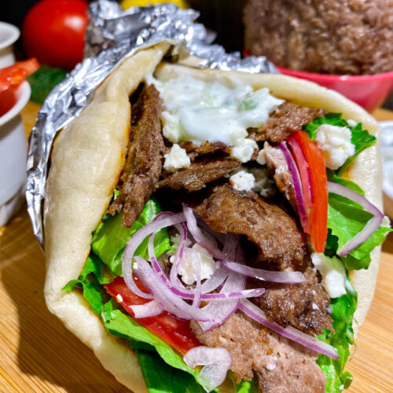

Gyro

Description
You have to try this classic gyro sandwich. I absolutely love being able to make my own gyros at home!
Ingredients
- 1 pound ground lamb
- 1 pound ground beef
- 1 tablespoon minced garlic
- 1 teaspoon dried oregano
- 1 teaspoon ground cumin
- 1 teaspoon dried marjoram
- 1 teaspoon dried thyme
Steps
- Place onion in a food processor and finely chop. Transfer onion to a piece of cheesecloth and squeeze out the liquid. Place onion in a large bowl.
- Mix lamb, beef, garlic, oregano, cumin, marjoram, thyme, rosemary, black pepper, and salt with the onion using your hands until well mixed. Cover bowl with plastic wrap and refrigerate until flavors blend, about 2 hours.
- Preheat the oven to 325 degrees F (165 degrees C).